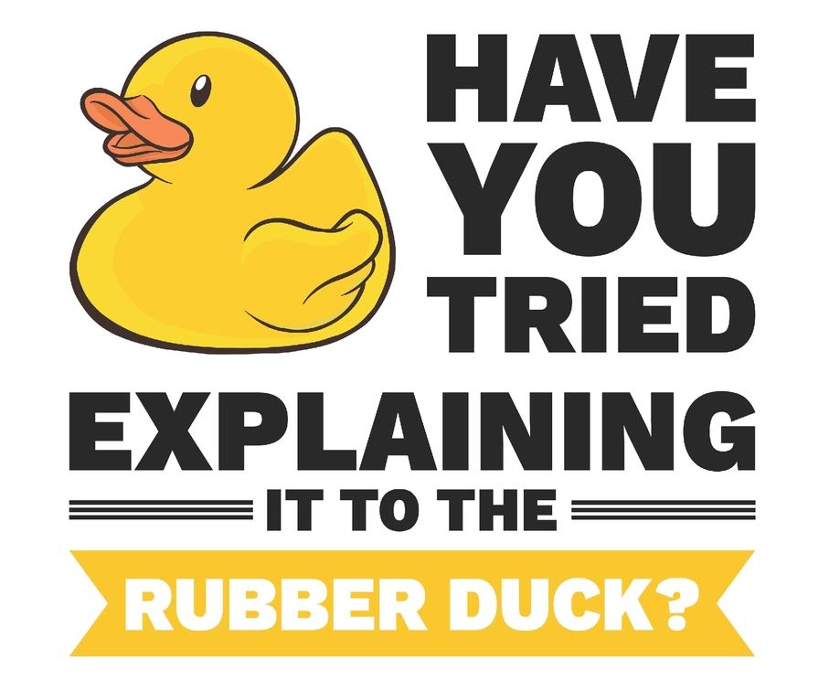

PROBLEM SOLVING
PROBLEM SOLVING TECHNIQUES
Problem solving is an important technique to have as a developer. As a developer, you have to deal with computer processes that can sometimes be very abstract, so it's important to know how to take a problem, break it down into smaller parts, and begin building your way towards a solution.
Some examples of problem solving techniques include:
- Pseudocode
- Trying something
- Rubber ducky method
- Reading error messages
- console.logging
- Googling
- Asking peers & coaches for help
- Improving your process with reflection
Pseudocode
Pseudocode is not actual code, but comments that tell you how the code will eventually look. These are informal, plainly written steps that form the rough draft or outline of your code. This is useful for breaking down a complicated problem, and can also be used if one developer needs to leave instructions for another to complete the code later.
I'm a big fan of pseudocode as it gives me a reference point of what I actually want to achieve. It especially keeps me on track for when I'm trying out different solutions to a problem and lose sight of what it is I'm meant to do.
Rubber Ducky Method
Explaining your problem out loud may just help you solve and debug your code yourself! By explaining your code or problem line-by-line to the rubber or metahphorical duck, this can help you better understand or find the gaps in your knowledge needed to solve the problem.
Although I've never used a rubber duck, I have defintely used this method with a person where just the simple act of saying your problem out loud to something or someone else can sometimes make it all click and give you the "aha" moment 💡
Console.logging
Sometimes you need a little extra visibility when writing out your code to see if what your coding is actually working and doing what you want it to do. One way to achieve this is to use the JavaScript function console.log() that allows you to print/display things to your console.
I have personally found this to be a very useful problem solving technique espeically during the Sprint 4 kata's. For example I used console.log() to test the outcome of my deBee function to remove the word "buzz" from a string:
function deBee(str){
var words = str.split(' ').filter(word => {
return word != "buzz"
})
return words.join(' ').toLowerCase()
}
var string = "Help! buzz I'm buzz buzz surrounded buzz by buzz buzz bees!!"
console.log(deBee(string)) // returns output to console "Help! I'm surrounded by bees!!"
This is probably my favourite and #1 go-to method for problem solving ANYTHING whether that be coding or figuring out how long to boil an egg for 🤣
STORY TIME: GETTING BLOCKED ON A SIMPLE PROBLEM
A simple problem I got blocked on is something I finally figured out while writing this technical blog!
For the past 4 weeks I could not for the life of me figure out how to insert inline blank space for my blog code blocks to have nice formatting (e.g. inserting tab spaces). The first thing I tried to do is go to google and tried a whole bunch of solutions such as using "" and the <pre> tag but it still wasn't happening for me. Then today, I happened to visit a site that also had code block examples and so I used DevTools to inspect their code and found they used to achieve what I wanted.
To achieve this indentation:
exampleObject {
name: "victoria",
age: 28,
occupation: "marine biologist"
}
The code in HTML looks like this:
exampleObject {
name: "victoria",
age: 28,
occupation: "marine biologist"
}
STORY TIME: ELEGANT PROBLEM SOLVING
An elegant solition I was pretty proud of was figuring out the forEach method in the JS olympics repl.it challenge instead of using a normal for loop.
Normally I find that using the temporary [i] variables in the for loop can end up being quite confusing, and the forEach method takes out all of that syntax and lets you do the same thing with little code.
Initial solution:
for (var i = 0; i < athleteArray.length; i++) {
let athlete = athleteArray[i]
console.log(athlete.name + " won the " + athlete.sport + " event!")
}
// returns
// Santa won the delivery event!
// Bart won the skating event!
// Homer won the eating event!
Although the above code was console.logging the correct answer, it wasn't adding a win property to every element in the athleteArray (which I couldn't figure out) so instead I went to google and found a simple solution that applies a specified function for each element in an array.
Elegant solution:
athleteArray.forEach(athlete => {
athlete.win = function() {
console.log(athlete.name + " won the " + athlete.sport + " event!")
}
})
Now we can see in the below output that in our athleteArray we have added a win property to it which console logs "{name} win the {sport} event!"